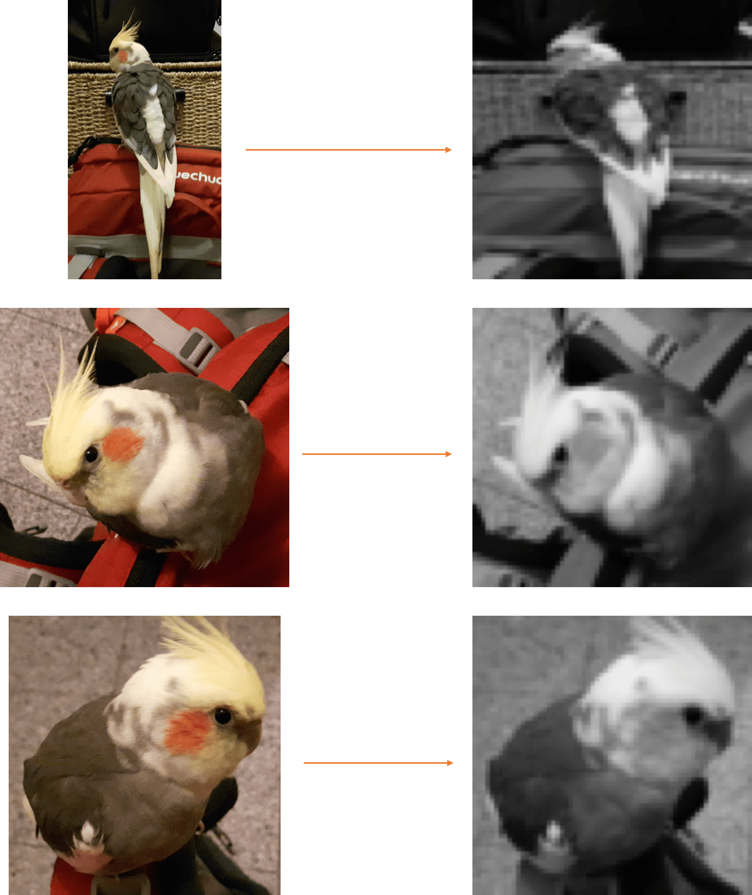
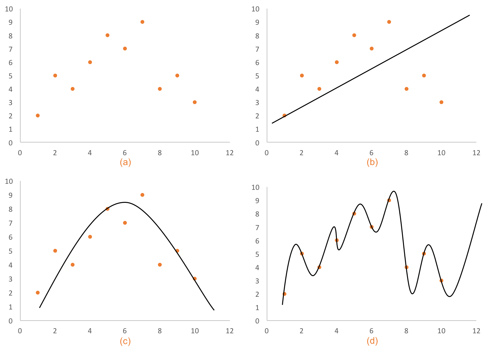

In Supervised Learning, Semi-Supervised Learning and part of Unsupervised Learning1 you use an algorithm to transform data into a model, that you then use to try to predict some feature of new, never-before-seen data. A model is a representation (read: simplification) of some aspect of reality, and is created by combining a ML algorithm and data.
It’s worth it to take a little detour here and talk about what this data actually is. A dataset has two main components: descriptive features (or just features) and a target feature.
For example, if you want to predict house prices, the price of a given house is the target feature, and its location, area, number of rooms, etc. are the (descriptive) features. Another example could be a bird recognition system, that receives photos and returns a Boolean value (either true or false) that indicates whether the picture contains a bird. The target feature is the Boolean value, and the features are the (color) values of each pixel. This means that all images the system receives have to be scaled to a given resolution (and can also be converted to grayscale), i.e. 64px by 64px, for a total of 4096 features2.

Wrapping up this small detour, data is usually in the form of a table, or can at least be thought of in this way. Every entry, or row, is a training example made up of both descriptive features and a target feature3. After you have this table, you then want to build a model that allows you to predict target features using only descriptive features (of examples that aren’t on the table you used to train the model). For example, predict whether an image you’ve never seen before has a bird or not.
So, in short, you give data to a computer; it uses an algorithm to extract patterns from that data; using these patterns, it builds a model; using that model, it tries to predict the value of never seen before data. This value might be a price, a class (i.e. if something is spam), or some other thing.
Why are there different algorithms to build models from data? Or why don’t we just use the best algorithm that builds the best models for everything? The answer is simple – there is no universal best model4.
It’s easy to get an intuitive understanding of why this would be the case: we said a model was a simplification, or generalisation, of reality. To build such a simplification, you must first strip away the unnecessary details, and leave only the big overall tendencies. But here lies the problem – how do you decide what is an unnecessary detail and what is a big tendency? You’ll have to use some set of core beliefs, or inductive assumptions. And every algorithm uses a different set of them!
George Box famously said “all models are wrong, but some are useful.” Which begs the question – when is a model not useful? Generally, a model is not useful if it doesn’t generalise well.
An easy example that demonstrates this is to imagine that instead of using Machine Learning, you just memorise whatever dataset you have. Well, let’s see if this model is actually useful with two simple but important questions: what happens if your data was even slightly noisy?, or if you meet an example that doesn't match any of your data's entries? You'll probably agree that memorization isn't the best model we can build, since it doesn't generalize your data into a more useful format.
In (Supervised) Machine Learning, there are a two very common terms to describe when an algorithm is not generalising well:
Hopefully, the following figure helps explain what I mean:

Before ending this post, I just wanted to leave you with a few quick tips on how you can mitigate underfitting and overfitting5:
Note: I plan to come back to this article to add Reinforcement Learning and (probably in another update) complete Unsupervised Learning as well – but I would like to have a deeper understanding of them before I do that, so it may take a little while… but then I’ll be able to take that ‘(Supervised)’ off the title, so it’ll be awesome! :D